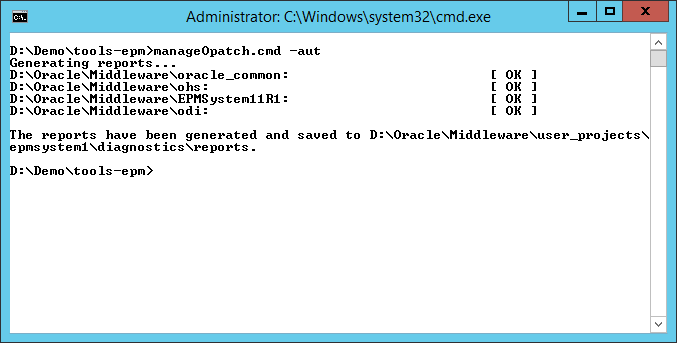

All Oracle homes are detected automaticly using the central OPatch inventory. A OPatch inventory report is generated for each discovered Oracle home. The default export format is HTML. You can change the export format, explained here.
D:\> manageOPatch.cmd|sh -aut

Created with the Personal Edition of HelpNDoc: Produce Kindle eBooks easily